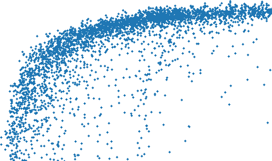
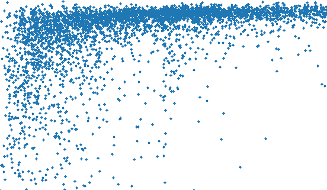

一句话总结:SimPO 把 DPO 的"对数概率比 vs 参考模型"奖励,改成"长度归一化的平均 log-prob"(直接用 $\frac{\beta}{|y|}\log\pi_\theta(y|x)$ 当 implicit reward),并在 Bradley-Terry 损失里加一个目标 reward margin $\gamma$——一举去掉参考模型、对齐"训练目标 ↔ 推理打分"、又能抑制 length exploitation。
🎯 面试考点(高频):

① 图说明:横轴是生成长度 $|y|$,纵轴是平均 log-likelihood $p_\theta(y|x) = \frac{1}{|y|}\log\pi_\theta(y|x)$。这张是消融:把 SimPO reward 里的 $\tfrac{1}{|y|}$ 拿掉(即直接用 $\sum_i\log\pi_\theta(y_i|\cdot)$ 当 reward)训练后,在 held-out set 上画的散点。
② 关键数据:点云呈现非常明显的"长序列 → log-prob 更高"的上升趋势,Spearman $\rho = 0.82$(几乎接近 1)。对照表 6:SimPO w/o LN $\rho=0.82$,DPO $\rho=0.59$,SimPO $\rho=0.34$,SFT $\rho=0.33$。同时表 5 显示去掉 LN 后 AlpacaEval2 LC 从 21.5 跌至 11.9(Mistral-Base)、32.1 → 19.1(Mistral-Instruct)。
③ 启示:没有 length normalization 时,模型为了让长的 chosen 响应拿到更高的"sum-log-prob reward",会被迫人为抬高所有长序列的概率——这正是 length exploitation 的根因。SimPO 把 reward 改成"平均 log-prob"后,reward 的量级不再随 $|y|$ 单调变化,模型就不再被引诱去拉长输出,生成长度回归正常水平,质量也显著回升。这张图是支撑"length normalization 是 SimPO 必要设计"的核心证据。

① 图说明:与 fig_1 同一坐标系(横轴 $|y|$,纵轴 $p_\theta(y|x)$),但训练算法换成 带 length normalization 的 SimPO(对应 Figure 2(b), $\rho\approx0.34$)或 DPO(Figure 4(a), $\rho\approx0.59$)。点云不再有强烈倾斜,而是大体集中在一条接近水平的高 log-prob 带上,且整体覆盖更宽。
② 关键数据:SimPO 的 Spearman $\rho = 0.34$,与 SFT 基线 ($\rho=0.33$) 几乎一致,远低于 SimPO w/o LN 的 $0.82$;DPO 居于中间 $\rho=0.59$,虽然 DPO 的 $\log\frac{\pi_\theta}{\pi_\mathrm{ref}}$ 比值在数学上能隐式抵消一部分长度偏置,但抵消得不彻底。Figure 4(b) 的 contingency table 进一步显示 DPO 训练集中约一半样本满足 $r_w>r_l$ 却 $p_w ③ 启示:把 reward 与"推理时实际打分(平均 log-likelihood)"对齐,等价于让"训练时学的 ranking"和"推理时用来选 token 的 ranking"指向同一目标——SimPO 同时拿到①低长度相关(不再 length-exploit)和②高 reward accuracy(held-out preference label 上更准)两个好处。这是 SimPO 论文对 DPO 的核心理论指控:reward 与 generation metric 错位,导致模型在 held-out preference pair 上的 ranking accuracy 只比随机略好。
SimPO: Simple Preference Optimization with a Reference-Free Reward · Yu Meng¹, Mengzhou Xia², Danqi Chen². ¹Computer Science Department, University of Virginia · ²Princeton Language and Intelligence (PLI), Princeton University. yumeng5@virginia.edu, {mengzhou, danqic}@cs.princeton.edu
Direct Preference Optimization (DPO) is a widely used offline preference optimization algorithm that reparameterizes reward functions in reinforcement learning from human feedback (RLHF) to enhance simplicity and training stability. In this work, we propose SimPO, a simpler yet more effective approach. The effectiveness of SimPO is attributed to a key design: using the average log probability of a sequence as the implicit reward. This reward formulation better aligns with model generation and eliminates the need for a reference model, making it more compute and memory efficient. Additionally, we introduce a target reward margin to the Bradley-Terry objective to encourage a larger margin between the winning and losing responses, further improving the algorithm's performance.
We compare SimPO to DPO and its recent variants across various state-of-the-art training setups, including both base and instruction-tuned models such as Mistral, Llama 3, and Gemma 2. We evaluate on extensive chat-based evaluation benchmarks, including AlpacaEval 2, MT-Bench, and Arena-Hard. Our results demonstrate that SimPO consistently and significantly outperforms existing approaches without substantially increasing response length. Specifically, SimPO outperforms DPO by up to 6.4 points on AlpacaEval 2 and by up to 7.5 points on Arena-Hard. Our top-performing model, built on Gemma-2-9B-it, achieves a 72.4% length-controlled win rate on AlpacaEval 2, a 59.1% win rate on Arena-Hard, and ranks 1st on Chatbot Arena among <10B models with real user votes.
Direct Preference Optimization(DPO)是一种被广泛使用的离线偏好优化算法,它把基于人类反馈的强化学习(RLHF)中的奖励函数重新参数化,以增强算法的简洁性与训练稳定性。本工作中,我们提出 SimPO——一个更简单也更有效的方法。SimPO 的有效性归因于一个核心设计:用一条序列的平均 log-probability 作为隐式奖励。这种奖励表述更好地与模型的生成方式对齐,且不再需要参考模型,因此在计算与显存上都更高效。此外,我们在 Bradley-Terry 目标中引入一个目标 reward margin,鼓励 winning 与 losing 响应之间形成更大的 margin,进一步提升算法表现。
我们在多种 state-of-the-art 训练设置(包括 Mistral、Llama 3、Gemma 2 的 base 与 instruction-tuned 模型)下,将 SimPO 与 DPO 及其最新变体进行了对比。我们在广泛的 chat 评测基准(包括 AlpacaEval 2、MT-Bench、Arena-Hard)上做了评估。结果表明,SimPO 一致且显著地优于现有方法,同时并未明显增加响应长度。具体而言,SimPO 在 AlpacaEval 2 上比 DPO 高出最多 6.4 点,在 Arena-Hard 上高出最多 7.5 点。我们最强的模型基于 Gemma-2-9B-it,在 AlpacaEval 2 上取得 72.4% length-controlled win rate,在 Arena-Hard 上取得 59.1% win rate,并在 Chatbot Arena 真实用户投票中,在 <10B 模型中位列第一。
Learning from human feedback is crucial in aligning large language models (LLMs) with human values and intentions, ensuring they are helpful, honest, and harmless. Reinforcement learning from human feedback (RLHF) is a popular method for fine-tuning language models to achieve effective alignment. While the classical RLHF approach has shown impressive results, it presents optimization challenges due to its multi-stage procedure, which involves training a reward model and then optimizing a policy model to maximize that reward.
Recently, researchers have been exploring simpler offline algorithms. Direct Preference Optimization (DPO) is one such approach. DPO reparameterizes the reward function in RLHF to directly learn a policy model from preference data, eliminating the need for an explicit reward model. It has gained widespread practical adoption due to its simplicity and stability. In DPO, the implicit reward is formulated using the log ratio of the likelihood of a response between the current policy model and the supervised fine-tuned (SFT) model. However, this reward formulation is not directly aligned with the metric used to guide generation, which is approximately the average log likelihood of a response generated by the policy model. We hypothesize that this discrepancy between training and inference may lead to suboptimal performance.
从人类反馈学习,对于把大语言模型(LLM)对齐到人类价值与意图(确保它们是 helpful、honest、harmless)至关重要。基于人类反馈的强化学习(RLHF)是用来微调语言模型、实现有效对齐的常用方法。经典 RLHF 路线虽然取得了亮眼的结果,但由于其多阶段流程——先训一个奖励模型,再优化一个策略模型去最大化该奖励——存在显著的优化难度。
最近,研究者们一直在探索更简单的离线算法。Direct Preference Optimization(DPO)就是其中之一。DPO 把 RLHF 中的奖励函数重新参数化,使我们能直接从偏好数据学到策略模型,免去显式奖励模型。由于其简洁与稳定,它被工业界广泛采用。在 DPO 中,隐式奖励被表述为"当前策略模型相对 SFT 模型的响应似然之比"的对数。然而,这一奖励表述并未直接与"用来指导生成的度量"——也就是近似的策略模型生成响应的平均 log-likelihood——对齐。我们假设这种训练与推理之间的错位会导致次优表现。
In this work, we propose SimPO, a simple yet effective offline preference optimization algorithm. The core of our algorithm aligns the reward function in the preference optimization objective with the generation metric. SimPO consists of two major components: (1) a length-normalized reward, calculated as the average log probability of all tokens in a response using the policy model, and (2) a target reward margin to ensure the reward difference between winning and losing responses exceeds this margin. In summary, SimPO has the following properties:
Simplicity. SimPO does not require a reference model, making it more lightweight and easier to implement compared to DPO and other reference-based methods.
Significant performance advantage. Despite its simplicity, SimPO significantly outperforms DPO and its latest variants (e.g., a recent reference-free objective ORPO). The performance advantage is consistent across various training setups and extensive chat-based evaluations, including AlpacaEval 2 and the challenging Arena-Hard benchmark. It achieves up to a 6.4 point improvement on AlpacaEval 2 and a 7.5 point improvement on Arena-Hard compared to DPO.
Minimal length exploitation. SimPO does not significantly increase response length compared to the SFT or DPO models, indicating minimal length exploitation.
本工作中,我们提出 SimPO——一个简单但有效的离线偏好优化算法。我们算法的核心,是将偏好优化目标里的奖励函数与生成时的度量对齐。SimPO 由两个主要部件构成:① length-normalized reward,定义为"策略模型给响应中所有 token 的对数概率取平均";② target reward margin,确保 winning 与 losing 响应之间的 reward 差异超过该 margin。总的来说,SimPO 有如下性质:
简单。SimPO 无需 reference model,比 DPO 与其他基于 reference 的方法更轻量、更易实现。
显著的性能优势。尽管简单,SimPO 显著优于 DPO 及其最新变体(例如近期的 reference-free 目标 ORPO)。这种优势在多种训练设置与广泛的 chat 评测(包括 AlpacaEval 2 与更具挑战的 Arena-Hard)上都成立。相对 DPO,SimPO 在 AlpacaEval 2 上最多提升 6.4 点,在 Arena-Hard 上最多提升 7.5 点。
极少的 length 利用。与 SFT 或 DPO 模型相比,SimPO 并未显著拉长响应长度,表明它几乎没有 length exploitation。
Extensive analysis shows that SimPO utilizes preference data more effectively, leading to a more accurate likelihood ranking of winning and losing responses on a held-out validation set, which in turn translates to a better policy model. Our Gemma-2-9B-it-SimPO model achieves state-of-the-art performance, with a 72.4% length-controlled win rate on AlpacaEval 2 and a 59.1% win rate on Arena-Hard, establishing it as the strongest open-source model under 10B parameters. Most notably, when evaluated on Chatbot Arena with real user votes, our model significantly improved upon the initial Gemma-2-9B-it model, advancing from 36th to 25th place and ranking first among all <10B models on the leaderboard.
大量分析表明,SimPO 更有效地利用了偏好数据——在 held-out 验证集上,它对 winning / losing 响应能给出更准确的 likelihood 排序,这种 ranking accuracy 提升进一步带来更好的策略模型。我们的 Gemma-2-9B-it-SimPO 取得 state-of-the-art:AlpacaEval 2 上 72.4% 的 length-controlled win rate、Arena-Hard 上 59.1% win rate,稳坐 <10B 开源模型最强位。最值得一提的是,在 Chatbot Arena 的真实用户投票中,我们的模型把原始 Gemma-2-9B-it 的排名从第 36 推进到第 25,并在所有 <10B 模型中拔得头筹。
In this section, we first introduce the background of DPO (§2.1). Then we identify the discrepancy between DPO's reward and the likelihood metric used for generation, and propose an alternative reference-free reward formulation that mitigates this issue (§2.2). Finally, we derive the SimPO objective by incorporating a target reward margin term into the Bradley-Terry model (§2.3).
2.1 Background: Direct Preference Optimization (DPO). DPO is one of the most popular preference optimization methods. Instead of learning an explicit reward model, DPO reparameterizes the reward function $r$ using a closed-form expression with the optimal policy:
where $\pi_\theta$ is the policy model, $\pi_\mathrm{ref}$ is the reference policy, typically the supervised fine-tuned (SFT) model, and $Z(x)$ is the partition function. By incorporating this reward formulation into the Bradley-Terry (BT) ranking objective, $p(y_w\succ y_l\mid x) = \sigma(r(x,y_w) - r(x,y_l))$, DPO expresses the probability of preference data with the policy model rather than the reward model, yielding the following objective:
where $(x, y_w, y_l)$ are preference pairs consisting of the prompt, the winning response, and the losing response from the preference dataset $\mathcal{D}$.
本节中,我们先回顾 DPO 的背景(§2.1)。然后,我们指出 DPO 的 reward 与"生成时所用的似然度量"之间存在错位,并提出一种无需 reference 的替代 reward 形式来缓解该问题(§2.2)。最后,我们通过在 Bradley-Terry 模型中加入一个 target reward margin,推导出 SimPO 目标(§2.3)。
2.1 背景:Direct Preference Optimization(DPO)。DPO 是最流行的偏好优化方法之一。它不去学一个显式奖励模型,而是用一个含最优策略的闭式表达式把奖励函数 $r$ 重新参数化为公式 (1),其中 $\pi_\theta$ 是策略模型,$\pi_\mathrm{ref}$ 是参考策略(通常是 SFT 模型),$Z(x)$ 是配分函数。将该 reward 代入 Bradley-Terry(BT)排名目标 $p(y_w\succ y_l\mid x) = \sigma(r(x,y_w)-r(x,y_l))$,DPO 用策略模型(而非奖励模型)表达了偏好数据的概率,从而得到公式 (2) 的目标。其中 $(x, y_w, y_l)$ 是偏好数据集 $\mathcal{D}$ 中的偏好三元组:prompt、winning response、losing response。
2.2 A Simple Reference-Free Reward Aligned with Generation.
Discrepancy between reward and generation for DPO. Using Eq. (1) as the implicit reward has the following drawbacks: (1) it requires a reference model $\pi_\mathrm{ref}$ during training, which incurs additional memory and computational costs; and (2) it creates a mismatch between the reward optimized in training and the log-likelihood optimized during inference, where no reference model is involved. This means that in DPO, for any triple $(x, y_w, y_l)$, satisfying the reward ranking $r(x, y_w) > r(x, y_l)$ does not necessarily mean that the likelihood ranking $p_\theta(y_w\mid x) > p_\theta(y_l\mid x)$ is met (here $p_\theta$ is the average log-likelihood in Eq. (3)). In our experiments, we observed that only $\sim 50\%$ of the triples from the training set satisfy this condition when trained with DPO (Figure 4b). This observation aligns with a concurrent work, which finds that existing models trained with DPO exhibit random ranking accuracy in terms of average log-likelihood, even after extensive preference optimization.
2.2 一个与生成对齐的、reference-free 的简单 reward。
DPO 中 reward 与 generation 之间的错位。将公式 (1) 作为隐式奖励有两个缺点:① 训练时需要参考模型 $\pi_\mathrm{ref}$,带来额外的内存与计算开销;② 它造成"训练时被优化的 reward"和"推理时被优化的 log-likelihood"(此时根本没有 reference model)互相错位。也就是说,在 DPO 里,对任意三元组 $(x, y_w, y_l)$,reward 排序 $r(x,y_w)>r(x,y_l)$ 成立不意味着 likelihood 排序 $p_\theta(y_w\mid x) > p_\theta(y_l\mid x)$ 也成立(这里 $p_\theta$ 是公式 (3) 的平均 log-likelihood)。实验中我们观测到:用 DPO 训出的模型,在训练集上只有约 50% 的三元组满足该条件(图 4b)。这与并行工作的发现一致——在 DPO 训出的模型上,以平均 log-likelihood 衡量的 ranking accuracy 接近随机水平,即便偏好优化训练已经做得很充分。
Length-normalized reward formulation. One solution is to use the summed token log probability as the reward, but this suffers from length bias — longer sequences tend to have lower log probabilities. Consequently, when $y_w$ is longer than $y_l$, optimizing the summed log probability as a reward forces the model to artificially inflate probabilities for longer sequences to ensure $y_w$ receives a higher reward than $y_l$. This overcompensation increases the risk of degeneration. To address this issue, we consider using the average log-likelihood as the implicit reward:
This metric is commonly used for ranking options in beam search and multiple-choice tasks within language models. Naturally, we consider replacing the reward formulation in DPO with $p_\theta$ in Eq. (3), so that it aligns with the likelihood metric that guides generation. This results in a length-normalized reward:
where $\beta$ is a constant that controls the scaling of the reward difference. We find that normalizing the reward with response lengths is crucial; removing the length normalization term from the reward formulation results in a bias toward generating longer but lower-quality sequences (see Section 4.4 for more details). Consequently, this reward formulation eliminates the need for a reference model, enhancing memory and computational efficiency compared to reference-dependent algorithms.
Length-normalized reward 形式。一种解法是直接用 token log-probability 之和作为 reward,但这会带来 length bias——更长的序列天然 log-probability 更低。结果是,当 $y_w$ 比 $y_l$ 更长时,把"sum log-probability"当作 reward 来优化,会逼着模型人为抬高长序列的概率,以确保 $y_w$ 拿到比 $y_l$ 更高的 reward。这种过度补偿增加了退化风险。为解决该问题,我们采用平均 log-likelihood 作为隐式 reward(公式 (3)),这一指标也常被用于 beam search 的候选排序,以及语言模型多选任务中的选项打分。自然地,我们考虑把 DPO 的 reward 替换为公式 (3) 的 $p_\theta$,使其与"指导生成的似然度量"对齐,从而得到 length-normalized reward(公式 (4))。其中 $\beta$ 是控制 reward 差异缩放的常数。我们发现用响应长度对 reward 做归一化是必要的:去掉这一项会让模型偏向生成"更长但质量更低"的序列(细节见 §4.4)。这一 reward 形式因此免去了 reference model,相比 reference-dependent 算法在内存与计算上更高效。
2.3 The SimPO Objective.
Target reward margin. Additionally, we introduce a target reward margin term, $\gamma > 0$, to the Bradley-Terry objective to ensure that the reward for the winning response, $r(x, y_w)$, exceeds the reward for the losing response, $r(x, y_l)$, by at least $\gamma$:
The margin between two classes is known to influence the generalization capabilities of classifiers. In standard training settings with random model initialization, increasing the target margin typically improves generalization. In preference optimization, the two classes are the winning and losing responses for a single input. In practice, we observe that generation quality initially improves with an increasing target margin but degrades when the margin becomes too large (§4.3). One of DPO's variants, IPO, also formulates a target reward margin similar to SimPO. However, its full objective is not as effective as SimPO (§4.1).
2.3 SimPO 的目标函数。
Target reward margin。此外,我们在 Bradley-Terry 目标中引入一个目标 reward margin 项 $\gamma>0$,确保 winning 响应的 reward $r(x,y_w)$ 至少比 losing 响应的 reward $r(x,y_l)$ 高出 $\gamma$,即公式 (5)。在分类器理论中,两类之间的 margin 会影响泛化能力。在标准的随机初始化训练设定下,增大 target margin 通常能改善泛化。在偏好优化场景里,两个"类"就是同一输入的 winning 与 losing 响应。实践中我们观察到:生成质量随 target margin 增大先升后降(§4.3)。DPO 的一个变体 IPO 也形式化了类似 SimPO 的 target reward margin,但其完整目标的效果不如 SimPO(§4.1)。
Objective. Finally, we obtain the SimPO objective by plugging Eq. (4) into Eq. (5):
In summary, SimPO employs an implicit reward formulation that directly aligns with the generation metric, eliminating the need for a reference model. Additionally, it introduces a target reward margin $\gamma$ to help separating the winning and losing responses. In Appendix F, we provide a gradient analysis of SimPO and DPO to further understand the differences between the two methods.
目标函数。把公式 (4) 代入公式 (5),最终得到 SimPO 目标——公式 (6)。综上,SimPO 采用一种直接与生成度量对齐的隐式 reward 形式,免去 reference model 的需求;同时引入目标 reward margin $\gamma$ 来帮助分开 winning 与 losing 响应。附录 F 给出了 SimPO 与 DPO 的梯度对比分析,以进一步理解二者差异。
Preventing catastrophic forgetting without KL regularization. Although SimPO does not impose KL regularization, we find that a combination of practical factors ensures effective learning from preference data while maintaining generalization, leading to an empirically low KL divergence from the reference model. These factors are: (1) a small learning rate, (2) a preference dataset that covers diverse domains and tasks, and (3) the intrinsic robustness of LLMs to learn from new data without forgetting prior knowledge. We present KL divergence experiments in Section 4.4.
没有 KL 正则化时如何防止灾难性遗忘。尽管 SimPO 并没有施加 KL 正则,我们发现几个实务因素的组合可以确保算法在有效学习偏好的同时保持泛化,从而经验上和参考模型保持较小的 KL 散度。这些因素包括:① 较小的学习率;② 覆盖多样领域与任务的偏好数据集;③ LLM 自身从新数据中学习而不遗忘已有知识的内在鲁棒性。KL 散度实验见 §4.4。
Models and training settings. We perform preference optimization with two families of models, Llama-3-8B and Mistral-7B, under two setups: Base and Instruct. In this section, our goal is to understand the performance of SimPO vs. other preference optimization methods in different experimental setups. Our strongest model is based on Gemma-2-9B (Instruct setup) with a stronger reward model, RLHFlow/ArmoRM-Llama3-8B-v0.1. We will present and discuss these results in Appendix J.
For the Base setup, we follow the training pipeline of Zephyr. First, we train a base model (i.e., mistralai/Mistral-7B-v0.1, or meta-llama/Meta-Llama-3-8B) on the UltraChat-200k dataset to obtain an SFT model. Then, we perform preference optimization on the UltraFeedback dataset using the SFT model as the starting point. This setup provides a high level of transparency, as the SFT models are trained on open-source data.
模型与训练设置。我们在两个模型族——Llama-3-8B 与 Mistral-7B——的 Base 与 Instruct 两种设置下做偏好优化。本节目标是理解 SimPO 与其它偏好优化方法在不同实验设置下的表现。我们最强的模型基于 Gemma-2-9B(Instruct 设置)并配合更强的奖励模型 RLHFlow/ArmoRM-Llama3-8B-v0.1,该结果将在附录 J 介绍并讨论。
对 Base 设置,我们沿用 Zephyr 的训练流水线。先在 UltraChat-200k 上训练 base 模型(即 mistralai/Mistral-7B-v0.1,或 meta-llama/Meta-Llama-3-8B)得到 SFT 模型;然后以 SFT 模型为起点,在 UltraFeedback 数据集上做偏好优化。这一设置透明度很高,因为 SFT 模型完全在开源数据上训练。
For the Instruct setup, we use an off-the-shelf instruction-tuned model (i.e., meta-llama/Meta-Llama-3-8B-Instruct, or mistralai/Mistral-7B-Instruct-v0.2) as the SFT models. These models have undergone extensive instruction-tuning processes, making them more powerful and robust than the SFT models in the Base setup. However, they are also more opaque because their RLHF procedure is not publicly disclosed. To mitigate the distribution shift between SFT models and the preference optimization process, we generate the preference dataset using the SFT models. This makes our Instruct setup closer to an on-policy setting. Specifically, we use prompts from the UltraFeedback dataset and regenerate the chosen and rejected response pairs $(y_w, y_l)$ with the SFT models. For each prompt $x$, we generate 5 responses using the SFT model with a sampling temperature of 0.8. We then use llm-blender/PairRM to score the 5 responses, selecting the highest-scoring one as $y_w$ and the lowest-scoring one as $y_l$. We only generated data in a single pass instead of iteratively.
对 Instruct 设置,我们直接使用现成的 instruction-tuned 模型(meta-llama/Meta-Llama-3-8B-Instruct 或 mistralai/Mistral-7B-Instruct-v0.2)作为 SFT 模型。这些模型经过了大量指令微调过程,比 Base 设置下的 SFT 模型更强、更鲁棒;但它们的 RLHF 流程并未公开,因此更"黑盒"。为了缓解 SFT 模型与偏好优化过程之间的分布漂移,我们使用 SFT 模型来生成偏好数据,这让 Instruct 设置更接近一个 on-policy 场景。具体地,我们用 UltraFeedback 的 prompts,用 SFT 模型重新生成 chosen/rejected 响应对 $(y_w, y_l)$:对每个 prompt $x$,以 0.8 的温度从 SFT 模型采样 5 个响应,再用 llm-blender/PairRM 给 5 个响应打分,选最高分作为 $y_w$、最低分作为 $y_l$。我们只做了一轮生成,而非迭代式数据生成。
In summary, we have four setups: Llama-3-Base, Llama-3-Instruct, Mistral-Base, and Mistral-Instruct. We believe these configurations represent the state-of-the-art, placing our models among the top performers on various leaderboards. We encourage future research to adopt these settings for better and fairer comparisons of different algorithms. Additionally, we find that tuning hyperparameters is crucial for achieving optimal performance with all the offline preference optimization algorithms, including DPO and SimPO. Generally, for SimPO, setting $\beta$ between $2.0$ and $2.5$ and $\gamma$ between $0.5$ and $1.5$ leads to good performance across all setups.
综上,我们一共有四套设置:Llama-3-Base、Llama-3-Instruct、Mistral-Base、Mistral-Instruct。我们认为这些配置代表 state-of-the-art 水平,我们的模型在各类 leaderboard 上都名列前茅。我们鼓励未来的工作采用这些设置,以便对不同算法做更好、更公平的对比。此外我们发现:调参对所有离线偏好优化算法(包括 DPO 与 SimPO)的最优表现都至关重要。一般而言,对 SimPO,$\beta$ 取 $2.0\sim2.5$、$\gamma$ 取 $0.5\sim1.5$,在所有设置下都能取得不错效果。
Evaluation benchmarks. We primarily assess our models using three of the most popular open-ended instruction-following benchmarks: MT-Bench, AlpacaEval 2, and Arena-Hard v0.1. These benchmarks evaluate the models' versatile conversational abilities across a diverse set of queries and have been widely adopted by the community. AlpacaEval 2 consists of 805 questions from 5 datasets, and MT-Bench covers 8 categories with 80 questions. The most recently released Arena-Hard is an enhanced version of an MT-Bench, incorporating 500 well-defined technical problem-solving queries. We report scores following each benchmark's evaluation protocol. For AlpacaEval 2, we report both the raw win rate (WR) and the length-controlled win rate (LC). The LC metric is specifically designed to be robust against model verbosity. For Arena-Hard, we report the win rate (WR) against the baseline model. For MT-Bench, we report the average MT-Bench score with GPT-4 and GPT-4-Preview-1106 as the judge model.
评测基准。我们主要用三个最流行的开放式指令跟随评测基准:MT-Bench、AlpacaEval 2、Arena-Hard v0.1。这些基准在多样化查询上评估模型的对话能力,并被社区广泛采用。AlpacaEval 2 含来自 5 个数据集的 805 个问题;MT-Bench 覆盖 8 个类别共 80 个问题;最新发布的 Arena-Hard 是 MT-Bench 的增强版,纳入了 500 个定义良好的技术问题求解 query。我们按各基准的官方协议报告分数:AlpacaEval 2 同时报 raw win rate(WR)与 length-controlled win rate(LC),其中 LC 专门设计来抵抗模型 verbosity 偏置;Arena-Hard 报告相对 baseline 模型的胜率;MT-Bench 报告以 GPT-4 与 GPT-4-Preview-1106 为评审模型下的平均 MT-Bench 分。
Baselines. We compare SimPO with other offline preference optimization methods. RRHF and SLiC-HF are ranking losses. RRHF uses length-normalized log-likelihood, similar to SimPO's reward function, while SLiC-HF uses log-likelihood directly and includes an SFT objective. IPO is a theoretically grounded approach that avoids DPO's assumption that pairwise preferences can be replaced with pointwise rewards. CPO uses sequence likelihood as a reward and trains alongside an SFT objective. KTO learns from non-paired preference data. ORPO introduces a reference-model-free odd ratio term to directly contrast winning and losing responses with the policy model and jointly trains with the SFT objective. R-DPO is a modified version of DPO that includes an additional regularization term to prevent exploitation of length. We thoroughly tune the hyperparameters for each baseline and report the best performance. We find that many variants of DPO do not empirically present an advantage over standard DPO.
对照基线。我们将 SimPO 与其它若干离线偏好优化方法对比。RRHF 与 SLiC-HF 是 ranking loss,其中 RRHF 使用 length-normalized log-likelihood(与 SimPO 的 reward 类似),SLiC-HF 直接用 log-likelihood 并附加 SFT 目标。IPO 是理论扎实的方法,避开了 DPO 的"成对偏好可以被点对点奖励替代"的假设。CPO 用序列似然作 reward,并与 SFT 目标联合训练。KTO 从非成对的偏好数据学习。ORPO 引入一个无需 reference 模型的 odd ratio 项,用策略模型直接对比 winning 与 losing 响应,并与 SFT 目标联合训练。R-DPO 是 DPO 的修改版,加入额外正则项以防止 length 利用。我们对每条基线都做了充分调参并报告最优结果。我们发现DPO 的许多变体经验上并未明显胜过标准 DPO。
In this section, we present main results of our experiments, highlighting the superior performance of SimPO on various benchmarks and ablation studies (§4.1). We provide an in-depth understanding of the following components: (1) length normalization (§4.2), (2) the margin term $\gamma$ (§4.3), and (3) why SimPO outperforms DPO (§4.4). Unless otherwise specified, the ablation studies are conducted using the Mistral-Base setting.
4.1 Main Results and Ablations.
SimPO consistently and significantly outperforms existing preference optimization methods. As shown in Table 4, while all preference optimization algorithms enhance performance over the SFT model, SimPO, despite its simplicity, achieves the best overall performance across all benchmarks and settings. These consistent and significant improvements highlight the robustness and effectiveness of SimPO. Notably, SimPO outperforms the best baseline by 3.6 to 4.8 points on the AlpacaEval 2 LC win rate across various settings. On Arena-Hard, SimPO consistently achieves superior performance, though it is occasionally surpassed by CPO. We find that CPO generates responses that are, on average, 50% longer than those generated by SimPO. Arena-Hard might favor longer generations due to the absence of a length penalty in its evaluation.
本节给出我们实验的主结果,突出 SimPO 在多个基准上的优越表现并展开消融(§4.1)。我们将深入剖析以下三块:① length normalization(§4.2);② margin 项 $\gamma$(§4.3);③ 为什么 SimPO 优于 DPO(§4.4)。除非另说,消融均在 Mistral-Base 设置下进行。
4.1 主结果与消融。
SimPO 一致且显著地胜过现有偏好优化方法。如表 4 所示,所有偏好优化算法都能在 SFT 模型基础上带来提升,但 SimPO 尽管极简,仍在所有基准与所有设置下取得最佳综合表现。这种一致且显著的提升体现了 SimPO 的鲁棒性与有效性。值得注意的是,SimPO 在多个设置下的 AlpacaEval 2 LC win rate 比最强基线高 3.6~4.8 点。Arena-Hard 上 SimPO 同样持续占优,但偶尔会被 CPO 超过——而我们发现 CPO 生成的响应平均比 SimPO 长 50%,Arena-Hard 由于评测中没有长度惩罚,可能偏好更长的生成。
Benchmark quality varies. Although all three benchmarks are widely adopted, we find that MT-Bench exhibits poor separability across different methods. Minor differences between methods on MT-Bench may be attributed to randomness, likely due to the limited scale of its evaluation data and its single-instance scoring protocol. In contrast, AlpacaEval 2 and Arena-Hard provide more meaningful distinctions between different methods. We observe that the win rate on Arena-Hard is significantly lower than on AlpacaEval 2, indicating that Arena-Hard is a more challenging benchmark.
The Instruct setting introduces significant performance gains. Across all benchmarks, we observe that the Instruct setting consistently outperforms the Base setting. This improvement is likely due to the higher quality of SFT models used for initialization and the generation of more high-quality preference data by these models.
不同基准的"区分度"差别大。虽然三种基准都被广泛采用,但我们发现 MT-Bench 对不同方法的区分度很差。MT-Bench 上方法之间的微小差异很可能源于随机性,可能因为其评测数据规模有限,且采用单条评分协议。相反,AlpacaEval 2 与 Arena-Hard 能在不同方法之间给出更有意义的差异。我们观察到 Arena-Hard 的胜率显著低于 AlpacaEval 2,表明 Arena-Hard 是更具挑战的基准。
Instruct 设置带来显著性能提升。所有基准上,Instruct 设置都持续胜过 Base 设置。这一改善很可能源于:① Instruct 用作初始化的 SFT 模型质量更高;② 由这些模型生成的偏好数据质量更高。
Both key designs in SimPO are crucial. In Table 5, we demonstrate results from ablating each key design of SimPO: (1) removing length normalization in Eq. (4) (i.e., w/o LN); (2) setting the target reward margin to be $0$ in Eq. (6) (i.e., $\gamma = 0$). Removing the length normalization has the most negative impact on the results. Our examination reveals that this leads to the generation of long and repetitive patterns, substantially degrading the overall quality of the output. Setting $\gamma$ to $0$ also leads to a performance degradation compared to SimPO, indicating that it is not the optimal target reward margin. In the following subsections, we conduct in-depth analyses to better understand both design choices.
SimPO 的两个核心设计都不可或缺。表 5 给出对 SimPO 两个核心设计的消融:① 去掉公式 (4) 中的 length normalization(记作 w/o LN);② 把公式 (6) 中的 target reward margin 设为 $\gamma=0$。去掉 length normalization 的负面影响最大——我们检查发现这会让模型生成又长又重复的模式,大幅降低输出质量。把 $\gamma$ 设为 $0$ 同样会带来性能下降,说明 $\gamma=0$ 并非最优 target reward margin。下文我们分两小节深入分析这两项设计。
4.2 Length Normalization (LN) Prevents Length Exploitation.
LN leads to an increase in the reward difference for all preference pairs, regardless of their length. The Bradley-Terry objective in Eq. (5) essentially aims to optimize the reward difference $\Delta r = r(x, y_w) - r(x, y_l)$ to exceed the target margin $\gamma$. We investigate the relationship between the learned reward differences and the length difference $\Delta l = |y_w| - |y_l|$ between the winning and losing responses from the training set of UltraFeedback. We measure the difference of reward ($r_{\text{SimPO}}$; Eq. (4)) using the SFT model, the SimPO model, and a model trained with SimPO but without length normalization. We present the results in Figure 2a and observe that SimPO with LN consistently achieves a positive reward margin for all response pairs, regardless of their length difference, and consistently improves the margin over the SFT model. In contrast, SimPO without LN results in a negative reward difference for preference pairs when the winning response is shorter than the losing response, indicating that the model learns poorly for these instances.
4.2 Length Normalization(LN)阻止 length exploitation。
LN 让所有偏好对的 reward 差异都增大,无论长度差异如何。公式 (5) 的 Bradley-Terry 目标本质上是把 reward 差异 $\Delta r = r(x,y_w)-r(x,y_l)$ 优化到超过 target margin $\gamma$。我们在 UltraFeedback 训练集上研究 reward 差异 $\Delta r$ 与长度差异 $\Delta l = |y_w|-|y_l|$ 的关系——分别用 SFT、SimPO、SimPO w/o LN 这三个模型测量 $r_{\text{SimPO}}$(公式 (4))的差。结果见图 2a:带 LN 的 SimPO 对所有响应对(不论长度差)都给出正的 reward margin,且一致高于 SFT 模型;相反,不带 LN 的 SimPO 在"winning 比 losing 更短"的偏好对上给出负的 reward 差异,表明模型对这类样本学得很差。
Removing LN results in a strong positive correlation between the reward and response length, leading to length exploitation. Figures 2b and 2c illustrate the average log likelihood ($p_\theta$ in Eq. (3)) versus response length on a held-out set for models trained with SimPO and SimPO without LN. The model trained without LN exhibits a much stronger positive Spearman correlation between likelihood and response length compared to SimPO, indicating a tendency to exploit length bias and generate longer sequences. In contrast, SimPO results in a Spearman correlation coefficient similar to the SFT model.
去掉 LN 会让 reward 与响应长度之间产生强正相关,引发 length exploitation。图 2b 与 2c 分别给出 SimPO 与 SimPO w/o LN 模型在 held-out 集上"平均 log-likelihood $p_\theta$(公式 (3))与响应长度"的关系。去 LN 的模型展现出明显更强的正向 Spearman 相关,表明它倾向于利用 length bias 来生成更长序列。相反,SimPO 给出的 Spearman 相关系数与 SFT 模型相近。
4.3 The Impact of Target Reward Margin in SimPO.
Influence of $\gamma$ on reward accuracy and win rate. We investigate how the target reward margin $\gamma$ in SimPO affects the reward accuracy on a held-out set and win rate on AlpacaEval 2, presenting the results in Figure 3a. Reward accuracy is measured as the percentage of preference pairs where the winning response ends up having a higher reward than the losing response (i.e., $r(x, y_w) > r(x, y_l)$). We observe that reward accuracy increases with $\gamma$ on both benchmarks, indicating that enforcing a larger target reward margin effectively improves reward accuracy. However, the win rate on AlpacaEval 2 first increases and then decreases with $\gamma$, suggesting that generation quality is not solely determined by the reward margin.
Impact of $\gamma$ on the reward distribution. We visualize the distribution of the learned reward margin $r(x,y_w)-r(x,y_l)$ and the reward of winning responses $r(x,y_w)$ under varying $\gamma$ values in Figure 3b and Figure 3c. Notably, increasing $\gamma$ tends to flatten both distributions and reduce the average log likelihood of winning sequences. This initially improves performance but can eventually lead to model degeneration. We hypothesize that there is a trade-off between accurately approximating the true reward distribution and maintaining a well-calibrated likelihood when setting the $\gamma$ value. Further exploration of this balance is deferred to future work.
4.3 SimPO 中 target reward margin 的作用。
$\gamma$ 对 reward accuracy 与 win rate 的影响。我们研究 SimPO 中 target reward margin $\gamma$ 如何影响 held-out 集上的 reward accuracy 与 AlpacaEval 2 的胜率,结果见图 3a。Reward accuracy 定义为"winning 响应最终拿到比 losing 响应更高 reward 的偏好对所占比例",即 $r(x,y_w)>r(x,y_l)$ 的比例。我们观察到:reward accuracy 随 $\gamma$ 增大而持续上升,说明强制一个更大的 target reward margin 确实能提升 reward accuracy。然而 AlpacaEval 2 的胜率随 $\gamma$ 先升后降,说明生成质量并不只由 reward margin 决定。
$\gamma$ 对 reward 分布的影响。我们在图 3b、3c 中可视化不同 $\gamma$ 下学到的 reward margin $r(x,y_w)-r(x,y_l)$ 与 winning reward $r(x,y_w)$ 的分布。可以看到:随着 $\gamma$ 增大,两条分布都被压扁,winning 序列的平均 log-likelihood 也被压低。这种压扁起初提升性能,但最终会导致模型退化。我们假设在设定 $\gamma$ 时,存在一个"准确逼近真实 reward 分布"与"维持良好校准的 likelihood"之间的权衡。对这一平衡的进一步探索留作未来工作。
4.4 In-Depth Analysis of DPO vs. SimPO. In this section, we compare SimPO to DPO in terms of (1) likelihood-length correlation, (2) reward formulation, (3) reward accuracy, and (4) algorithm efficiency. We demonstrate that SimPO outperforms DPO in terms of reward accuracy and efficiency.
DPO reward implicitly facilitates length normalization. Although the DPO reward expression $r(x,y) = \beta\log\frac{\pi_\theta(y\mid x)}{\pi_\mathrm{ref}(y\mid x)}$ (with the partition function excluded) lacks an explicit term for length normalization, the logarithmic ratio between the policy model and the reference model can serve to implicitly counteract length bias. As shown in Table 6 and Figure 4a, employing DPO reduces the Spearman correlation coefficient between average log likelihood and response length compared to the approach without any length normalization (referred to as "SimPO w/o LN"). However, it still exhibits a stronger positive correlation when compared to SimPO. (Spearman $\rho$ across models: SimPO w/o LN = 0.82, DPO = 0.59, SimPO = 0.34.)
4.4 DPO vs. SimPO 的深入分析。本节从四个维度对比 SimPO 与 DPO:① likelihood-length 相关性;② reward 表述;③ reward accuracy;④ 算法效率。我们将表明 SimPO 在 reward accuracy 与效率方面都胜过 DPO。
DPO 的 reward 隐式地起到了部分 length normalization 作用。尽管 DPO 的 reward 表达式 $r(x,y)=\beta\log\frac{\pi_\theta(y\mid x)}{\pi_\mathrm{ref}(y\mid x)}$(去掉配分函数后)并不含显式长度归一化项,但策略模型与参考模型之间的对数比,确实能隐式地抵消一部分长度偏置。如表 6 与图 4a 所示:相对完全不做 length normalization(即 "SimPO w/o LN"),DPO 把平均 log-likelihood 与响应长度之间的 Spearman 相关压低了不少;然而它仍然表现出比 SimPO 更强的正相关。各模型的 Spearman $\rho$:SimPO w/o LN $=0.82$,DPO $=0.59$,SimPO $=0.34$。
DPO reward mismatches generation likelihood. There is a divergence between DPO's reward formulation, $r_\theta(x,y) = \beta\log\frac{\pi_\theta(y\mid x)}{\pi_\mathrm{ref}(y\mid x)}$, and the average log likelihood metric, $p_\theta(y\mid x) = \tfrac{1}{|y|}\log\pi_\theta(y\mid x)$, which directly impacts generation. As shown in Figure 4b, among the instances on the UltraFeedback training set where $r_\theta(x, y_w) > r_\theta(x, y_l)$, almost half of the pairs have $p_\theta(y_w\mid x) < p_\theta(y_l\mid x)$. In contrast, SimPO directly employs the average log likelihood (scaled by $\beta$) as the reward expression, thereby eliminating the discrepancy completely, as demonstrated in Figure 6b.
DPO lags behind SimPO in terms of reward accuracy. In Figure 4c, we compare the reward accuracy of SimPO and DPO, assessing how well their final learned rewards align with preference labels on a held-out set. SimPO consistently achieves higher reward accuracy than DPO, suggesting that our reward design facilitates better generalization and leads to higher quality generations.
DPO 的 reward 与生成似然不匹配。DPO 的 reward 表述 $r_\theta(x,y)=\beta\log\frac{\pi_\theta(y\mid x)}{\pi_\mathrm{ref}(y\mid x)}$ 与平均 log-likelihood 度量 $p_\theta(y\mid x)=\frac{1}{|y|}\log\pi_\theta(y\mid x)$ 之间存在分歧,而后者直接影响生成。如图 4b 所示,在 UltraFeedback 训练集上,满足 $r_\theta(x,y_w)>r_\theta(x,y_l)$ 的样本中,几乎一半满足 $p_\theta(y_w\mid x)
在 reward accuracy 上 DPO 不如 SimPO。图 4c 对比 SimPO 与 DPO 的 reward accuracy,衡量它们最终学到的 reward 在 held-out 集上与偏好标签的对齐程度。SimPO 始终高于 DPO,表明我们的 reward 设计有利于更好的泛化与更高质量的生成。
KL divergence of SimPO and DPO. In Figure 5a, we present the KL divergence between the policy model trained with DPO and SimPO and the reference model with different $\beta$, measured on the winning responses from a held-out set during training. Figure 5b shows the corresponding AlpacaEval 2 LC win rate. Although SimPO does not apply any form of regularization against the reference model, the KL divergence of SimPO is reasonably small. Increasing $\beta$ reduces the KL divergence for both DPO and SimPO, with DPO exhibiting a more pronounced reduction at higher $\beta$ values. In this particular setting (Mistral-base), Figure 5b demonstrates that a smaller $\beta$ can improve AlpacaEval 2 performance, despite the higher KL divergence. We hypothesize that when the reference model is weak, strictly constraining the policy model to the reference model may not be beneficial. As a caveat, while we did not observe any training collapse or degeneration with proper tuning, in principle, SimPO could potentially lead to reward hacking without explicit regularization against the reference model. In such a scenario, the model might achieve a low loss but degenerate.
SimPO 与 DPO 的 KL 散度。图 5a 展示了不同 $\beta$ 下,用 DPO 与 SimPO 训练的策略模型相对参考模型的 KL 散度(在 held-out 集的 winning 响应上测量);图 5b 给出对应的 AlpacaEval 2 LC 胜率。尽管 SimPO 并未对参考模型施加任何形式的正则,它的 KL 散度依然合理偏小。增大 $\beta$ 会同时降低 DPO 与 SimPO 的 KL 散度,其中 DPO 在大 $\beta$ 下减少得更明显。在该具体设置(Mistral-Base)下,图 5b 表明较小的 $\beta$ 可以提升 AlpacaEval 2 性能——即便 KL 散度更高。我们假设:当参考模型偏弱时,严格约束策略模型贴近参考模型未必有益。需要注意:虽然在充分调参下我们没看到训练崩溃或退化,但原则上 SimPO 由于缺乏对参考模型的显式正则,存在 reward hacking 风险——此时模型 loss 很低却退化。
SimPO is more memory and compute-efficient than DPO. Another benefit of SimPO is its efficiency as it does not use a reference model. Figure 5c illustrates the overall run time and per-GPU peak memory usage of SimPO and DPO in the Llama-3-Base setting using $8\times$H100 GPUs. Compared to a vanilla DPO implementation, SimPO cuts run time by roughly 20% and reduces GPU memory usage by about 10%, thanks to eliminating forward passes with the reference model.
SimPO 在显存与计算上都比 DPO 更高效。SimPO 的另一个好处是:由于不使用参考模型,它在效率上占优。图 5c 给出 Llama-3-Base 设置下,在 $8\times$H100 GPU 上 SimPO 与 DPO 的总运行时间与单卡峰值显存。相比朴素 DPO 实现,SimPO 把训练时间砍掉约 20%,显存用量降低约 10%——这是省掉参考模型 forward 的直接收益。
Reinforcement learning from human feedback. RLHF is a technique that aligns large language models with human preferences and values. The classical RLHF pipeline typically comprises three phases: supervised fine-tuning, reward model training, and policy optimization. Proximal Policy Optimization (PPO) is a widely used algorithm in the third stage of RLHF. The RLHF framework is also widely applied to various applications, such as mitigating toxicity, ensuring safety, enhancing helpfulness, searching and navigating the web, and improving model reasoning abilities. Recently, prior work has highlighted challenges across the whole RLHF pipeline from preference data collection to model training. Further research has also demonstrated that RLHF can lead to biased outcomes, such as verbose outputs from the model.
基于人类反馈的强化学习。RLHF 是一种把大语言模型与人类偏好、价值对齐的技术。经典 RLHF 流水线通常包含三个阶段:监督微调(SFT)、奖励模型训练、策略优化。Proximal Policy Optimization(PPO)是 RLHF 第三阶段最常用的算法。RLHF 框架还被广泛应用于:降低毒性、安全保证、增强 helpfulness、网页检索与导航、提升模型推理能力等。近期工作指出 RLHF 整条流水线(从偏好数据收集到模型训练)都存在挑战;另有研究表明 RLHF 会带来偏置后果,例如模型输出 verbose、过度啰嗦。
Offline vs. iterative preference optimization. Given that online preference optimization algorithms are complex and difficult to optimize, researchers have been exploring more efficient and simpler alternative offline algorithms. Direct Preference Optimization (DPO) is a notable example. However, the absence of an explicit reward model in DPO limits its ability to sample preference pairs from the optimal policy. To address this, researchers have explored augmenting preference data using a trained SFT policy or a refined SFT policy with rejection sampling, enabling the policy to learn from data generated by the optimal policy. Further studies have extended this approach to an iterative training setup, by continuously updating the reference model with the most recent policy model or generating new preference pairs at each iteration. In this work, we focus exclusively on offline settings, avoiding any iterative training processes.
Offline 与 iterative 偏好优化。由于在线偏好优化算法复杂且难优化,研究者们一直在探索更高效、更简单的离线替代算法,DPO 是其中的典型代表。然而,DPO 缺少显式奖励模型,这限制了它"从最优策略采样偏好对"的能力。为此,有工作探索用训练后的 SFT 策略,或加入 rejection sampling 精化的 SFT 策略来扩充偏好数据,使策略能从最优策略生成的数据中学习。后续研究又把这一思路扩展为迭代式训练——持续用最新策略更新 reference 模型,或在每次迭代时生成新的偏好对。本工作只聚焦离线设定,不涉及任何迭代训练流程。
Preference optimization objectives. A variety of preference optimization objectives have been proposed besides DPO. Ranking objectives allow for comparisons among more than two instances. Another line of work explores simpler preference optimization objectives that do not rely on a reference model, similar to SimPO. Some works propose to jointly optimize instructions and responses, finding it effectively improves DPO. Others focus on post-training extrapolation between the SFT and the aligned model to further enhance model performance. In this work, we compare SimPO to a series of offline algorithms, including RRHF, SLiC-HF, DPO, IPO, CPO, KTO, ORPO, and R-DPO, and find that SimPO can outperform them in both efficiency and performance. Recently, a generalized preference optimization framework was proposed unifying different offline algorithms, and SimPO can be seen as a special case.
偏好优化目标函数。除 DPO 外,已有多种偏好优化目标被提出。Ranking 类目标可在多于两条样本之间做比较;另有一条线探索不依赖 reference model 的更简单偏好优化目标(与 SimPO 思路相近)。一些工作提出联合优化指令与响应,发现能有效改进 DPO;另一些聚焦在训练后做 SFT 模型与对齐模型之间的外推(extrapolation),以进一步提升模型表现。本工作中,我们将 SimPO 与一系列离线算法对比:RRHF、SLiC-HF、DPO、IPO、CPO、KTO、ORPO、R-DPO——SimPO 在效率与性能上都能胜出。近期还提出了一个统一不同离线算法的广义偏好优化框架,SimPO 可被视为其中一种特例。
In this work, we propose SimPO, a simple and effective preference optimization algorithm that consistently outperforms existing approaches across various training setups. By aligning the reward function with the generation likelihood and introducing a target reward margin, SimPO eliminates the need for a reference model and achieves strong performance without exploiting the length bias. Extensive analysis demonstrates that the key designs in SimPO are crucial and validates the efficiency and effectiveness of SimPO. A detailed discussion of the limitations can be found in Appendix A.
本工作中,我们提出 SimPO——一个简单且有效的偏好优化算法,在多种训练设置下一致胜过现有方法。通过把 reward 函数与生成似然对齐并引入 target reward margin,SimPO 免去了 reference model 的需求,并在不利用 length bias 的情况下取得了强大表现。大量分析证实 SimPO 的核心设计不可或缺,验证了其效率与有效性。局限的详细讨论见附录 A。
More in-depth theoretical analysis. Despite the empirical success and intuitive motivation of SimPO, a more rigorous theoretical analysis is necessary to fully understand the factors contributing to its effectiveness. Additionally, we introduce an additional hyperparameter, the target reward margin, which requires manual tuning. Future work could explore how to determine the optimal margin automatically and provide a more theoretical understanding of SimPO.
需要更深入的理论分析。尽管 SimPO 取得了实证上的成功,其动机也直观,但要完全理解它有效性的成因,仍需更严谨的理论分析。此外,我们额外引入了一个超参数(target reward margin),需要手动调。未来工作可以探索如何自动确定最优 margin,并对 SimPO 给出更扎实的理论理解。
Safety and honesty. SimPO is designed to optimize the generation quality of language models by pushing the margin between the average log likelihood of the winning response and the losing response to exceed a target reward margin. However, it does not explicitly consider safety and honesty aspects, which are crucial for real-world applications. Future work should explore integrating safety and honesty constraints into SimPO to ensure that the generated responses are not only high-quality but also safe and honest. The dataset used in this work, UltraFeedback, primarily focuses on helpfulness, and future research may consider a more comprehensive study utilizing larger-scale preference datasets and evaluation benchmarks that place a strong emphasis on safety aspects. Nonetheless, we observe that this method consistently achieves high TruthfulQA performance compared to other objectives, suggesting its potential for safety alignment.
Safety 与 honesty。SimPO 的设计目标是通过把 winning / losing 响应的平均 log-likelihood 之间的 margin 推过某个 target,以优化语言模型的生成质量。但它并未显式考虑 safety 与 honesty,而后者对真实世界应用至关重要。未来工作应探索把 safety 与 honesty 约束整合进 SimPO,确保生成响应既高质量又安全、诚实。本工作所用的 UltraFeedback 数据集主要侧重 helpfulness,未来研究可以借助更大规模、对 safety 有更强侧重的偏好数据集和评测基准。即便如此,我们观察到 SimPO 相对其它目标在 TruthfulQA 上一直取得较高表现,提示其在 safety alignment 上具备一定潜力。
Performance drop on math. We observed that preference optimization algorithms generally decrease downstream task performance, particularly on reasoning-heavy tasks like GSM8k. SimPO occasionally results in performance comparable to or worse than DPO. We hypothesize that this may be related to the choice of training datasets, hyperparameters used for training, or a mismatch of chat templates used for downstream task evaluations. One explanation is that the preference optimization objective may not be effectively increasing the likelihood of preferred sequences despite increasing the reward margin. Prior work first observed this phenomenon and pointed out that this can hinder learning from math preference pairs where changing one token can flip the label (e.g., changing $2+2=4$ to $2+2=5$). They propose a simple regularization strategy to add back a reference-model calibrated supervised fine-tuning loss to the preference optimization objective, and effectively mitigate this issue. Future work may consider integrating this regularization strategy into SimPO to improve performance on reasoning-heavy tasks.
数学任务上的性能下降。我们观察到偏好优化算法普遍会让下游任务性能下降,尤其是 GSM8K 这类推理重的任务。SimPO 偶尔也会在这上面与 DPO 持平或更差。我们假设这与训练数据的选择、训练超参,或下游评测所用 chat template 不匹配等因素有关。一种解释是:偏好优化目标在抬升 reward margin 的同时,未必真的提升了 preferred 序列的 likelihood。先前工作首次观察到该现象,并指出它会阻碍从数学偏好对中学习——例如把 "$2+2=4$" 改成 "$2+2=5$" 就可能让标签翻转,这类样本对优化极其敏感。他们提出一种简单的正则化策略:在偏好优化目标中加回一个被参考模型校准过的 SFT 损失,可以有效缓解该问题。未来工作可考虑把该正则化思路整合进 SimPO,以提升推理重任务上的表现。
F. Gradient Analysis (Appendix F). We examine the gradients of SimPO and DPO to understand their different impact on the training process:
where $s_\theta = \sigma\!\bigl(\tfrac{\beta}{|y_l|}\log\pi_\theta(y_l|x) - \tfrac{\beta}{|y_w|}\log\pi_\theta(y_w|x) + \gamma\bigr)$ and $d_\theta = \sigma\!\bigl(\beta\log\tfrac{\pi_\theta(y_l|x)}{\pi_\mathrm{ref}(y_l|x)} - \beta\log\tfrac{\pi_\theta(y_w|x)}{\pi_\mathrm{ref}(y_w|x)}\bigr)$. The differences are twofold: (1) SimPO's gradient weight $s_\theta$ does not involve the reference model and has a straightforward interpretation: weights are higher for samples where the policy model incorrectly assigns higher likelihood to $y_l$ than to $y_w$; (2) SimPO's gradients on $y_l$ and $y_w$ are length-normalized, while DPO's are not. This corresponds to the empirical finding that DPO may exploit length bias: longer sequences with more tokens receive larger gradient updates in DPO, dominating the training process.
F. 梯度对比(附录 F)。我们对比 SimPO 与 DPO 的梯度,以理解二者对训练过程的不同影响:其梯度形式分别给出。其中 $s_\theta = \sigma\bigl(\frac{\beta}{|y_l|}\log\pi_\theta(y_l|x) - \frac{\beta}{|y_w|}\log\pi_\theta(y_w|x) + \gamma\bigr)$ 与 $d_\theta = \sigma\bigl(\beta\log\frac{\pi_\theta(y_l|x)}{\pi_\mathrm{ref}(y_l|x)} - \beta\log\frac{\pi_\theta(y_w|x)}{\pi_\mathrm{ref}(y_w|x)}\bigr)$ 分别是 SimPO 与 DPO 的样本权重。差异有二:① SimPO 的权重 $s_\theta$ 不含 reference 模型,且有直观解释——当策略模型把更高的 likelihood 错误地分给 $y_l$ 而非 $y_w$ 时,该样本权重更大;② SimPO 对 $y_l$、$y_w$ 的梯度更新都做了 length-normalization,而 DPO 没有。这正对应实证发现:DPO 会利用 length bias——token 更多的长序列在 DPO 里拿到更大的梯度更新,从而支配训练过程。
I. Applying LN and target reward margin to DPO (Appendix I). Since the release of the paper, we have had inquiries from researchers about whether the key design elements of SimPO — length normalization and target reward margin — could benefit DPO. By doing so, we derive the following two objectives:
The results indicate that, unlike SimPO, length normalization and target reward margin do not consistently benefit DPO. Specifically, length normalization significantly improves DPO performance only in the Mistral-Base setting, where the preference optimization dataset shows a strong length bias. However, it does not provide a benefit in the Mistral-Instruct setting, where the lengths of winning and losing responses are comparable. This is likely because DPO already includes an implicit instance-wise target reward margin via the reference model, since $\mathcal{L}_{\text{DPO}} = \log\sigma\bigl(\beta\log\pi_\theta(y_w) - \beta\log\pi_\theta(y_l) - \underbrace{(\beta\log\pi_\mathrm{ref}(y_w) - \beta\log\pi_\mathrm{ref}(y_l))}_{=\gamma_\mathrm{ref}}\bigr)$.
I. 把 LN 与 target reward margin 搬给 DPO(附录 I)。论文发布以来,我们不断收到一个问题:SimPO 的两件武器(length normalization 与 target reward margin)能否同样帮到 DPO?把它们搬上 DPO,得到两个新目标——见上面两个公式。实验表明:与 SimPO 不同,LN 与 target reward margin 并不一致地为 DPO 带来好处。具体地,LN 只在 Mistral-Base 设置下显著提升 DPO 表现(因为该偏好数据集存在很强的 length bias);而在 winning 与 losing 响应长度相当的 Mistral-Instruct 设置下,LN 反而没好处。原因很可能是:DPO 本身已经通过参考模型隐式包含了一个逐样本的 target reward margin——展开 DPO 的损失可见 $\mathcal{L}_{\text{DPO}} = \log\sigma\bigl(\beta\log\pi_\theta(y_w)-\beta\log\pi_\theta(y_l)-(\beta\log\pi_\mathrm{ref}(y_w)-\beta\log\pi_\mathrm{ref}(y_l))\bigr)$,括号项正是一个隐式的 $\gamma_\mathrm{ref}$,因此再加显式 $\gamma$ 是冗余的。
J. Gemma-2 results (Appendix J). We evaluate SimPO using Google's recently released Gemma-2-9B-it model. For training data, we generate up to 5 responses per prompt from the UltraFeedback dataset and use the ArmoRM model to annotate preferences. We compare SimPO against a DPO-trained variant, both fine-tuned from the Gemma-2-9B-it base model. SimPO demonstrates superior performance on chat benchmarks like AlpacaEval 2 and Arena-Hard while maintaining the model's original zero-shot capabilities on tasks like GSM8K and MMLU. Notably, varying the learning rate during fine-tuning has minimal impact on the model's performance. Gemma-2-9B-it-SimPO improved the original Gemma-2-9B-it ranking on Chatbot Arena from 36th to 25th, making the SimPO variant the top-ranked <10B model on the Chatbot Arena leaderboard based on real user votes (Sep 16, 2024). Table 17 shows: Gemma-2-9B-it baseline = 51.1% (AlpacaEval 2 LC), 40.8% (Arena-Hard); Gemma-2-9B-DPO = 67.8% / 58.9%; Gemma-2-9B-SimPO (lr=8e-7, released) = 72.4% / 59.1%, while GSM8K and MMLU are essentially preserved (88.0% / 72.2%).
J. Gemma-2 上的结果(附录 J)。我们在 Google 新发布的 Gemma-2-9B-it 上评估 SimPO。训练数据由 UltraFeedback 中每个 prompt 至多采样 5 个响应、用 ArmoRM 标注偏好得到。我们把 SimPO 与 DPO 在该模型上做对比(都从 Gemma-2-9B-it 起步)。SimPO 在 AlpacaEval 2、Arena-Hard 等 chat 基准上表现更优,同时在 GSM8K、MMLU 等任务上维持原模型的 zero-shot 能力。值得注意的是:fine-tune 期间改变 learning rate 对 Gemma-2 影响极小。Gemma-2-9B-it-SimPO 把原 Gemma-2-9B-it 在 Chatbot Arena 上的排名从第 36 推进到第 25,在真实用户投票下成为 <10B 模型中的第一(2024-09-16 数据)。表 17 显示:Gemma-2-9B-it 基线 = 51.1%(AlpacaEval 2 LC)/ 40.8%(Arena-Hard);Gemma-2-9B-DPO = 67.8% / 58.9%;Gemma-2-9B-SimPO(lr=8e-7,发布版) = 72.4% / 59.1%——而 GSM8K 与 MMLU 几乎不掉(88.0% / 72.2%)。
(参考文献仅作索引,不译。)完整 102 条参考文献参见原文 PDF p.11–p.17,核心相关工作:[6] IPO(Azar et al.),[42] ORPO(Hong et al.),[64] R-DPO(Park et al.),[66] DPO(Rafailov et al.),[88] CPO(Xu et al.),[29] KTO(Ethayarajh et al.),[91] RRHF,[96] SLiC-HF,[23] UltraFeedback,[80] Zephyr,[28] Length-controlled AlpacaEval,[54] Arena-Hard,[55] AlpacaEval,[99] MT-Bench,[84] ArmoRM,[63] DPO-positive (Smaug),[45] PairRM,[44] Mistral-7B,[77] Gemma-2,[70] PPO。